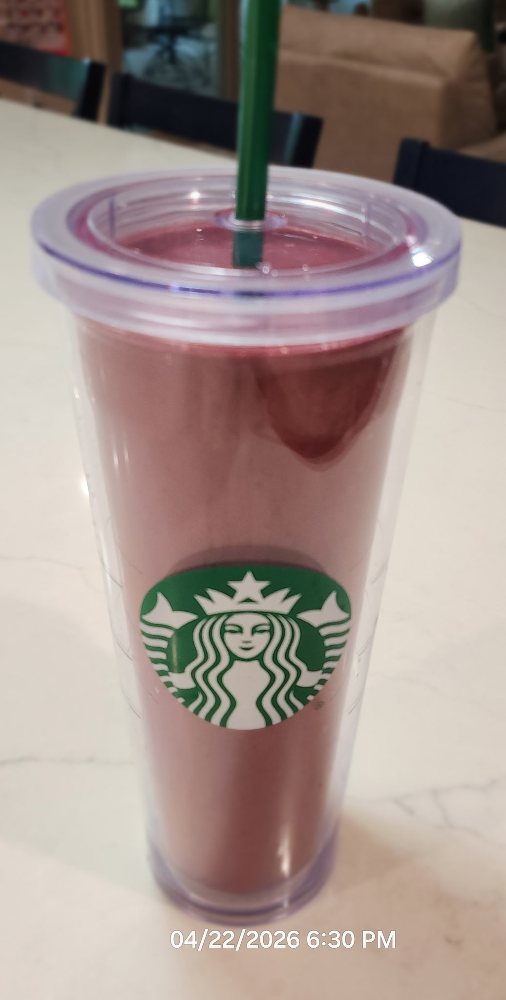

Ingredients
Directions
Chef's Notes
Foofah Table
| Category | Item | Amount | Notes |
|---|---|---|---|
| Liquid | Soy Milk | 350 ml | Vanilla flavored is best (8 oz) |
| Orange Juice | 120 ml | Any fruit juice will do. Pineapple juice and mango nectar are good substitutes (4 oz) | |
| Dairy | Vanilla Yogurt | 40 ml | Quantity is optional. Dairy intolerant can skip this or substitute tapioca (2-3 tbs) |
| Vegetables | Baby Spinach | 60 g | Spinach or spring mix (any leafy vegetable) (2 oz) |
| Fruit | Strawberry | 120 g | Frozen is best but not strictly necessary. If strawberries are unavailable, raspberries, blackberries, and blueberries are good substitutes. (4 oz) |
| Pineapple | 85 g | Mango is a good substitute (3 oz) | |
| Banana | 60 g | Thai bananas are great in this recipe (2 oz) |